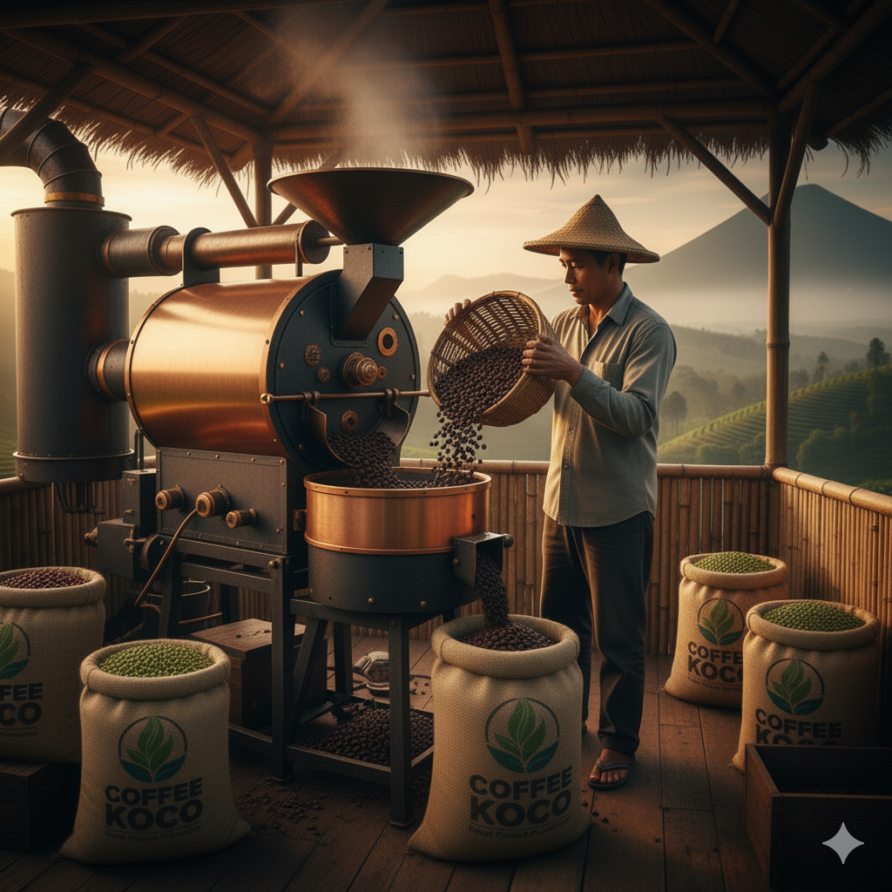

Galeri Produk & Kegiatan

Hanya biji kopi terbaik yang akan digunakan untuk memastikan kualitas rasa yang optimal

Proses ini penting untuk mengurangi kadar air dan mengembangkan rasa khas biji kopi.

Biji kopi kering kemudian disortir untuk memisahkan biji yang berkualitas dari kotoran atau biji yang cacat

Proses roasting inilah yang akan mengeluarkan aroma dan profil rasa unik dari kopi Koco, mulai dari tingkat sangrai terang hingga gelap, sesuai dengan karakteristik yang diinginkan.

Tingkat kehalusan gilingan disesuaikan untuk berbagai metode penyeduhan, memastikan ekstraksi rasa yang sempurna.

Kopi diolang dengan berbagai macam cara pengolahan menghasilkan kopi yang nikmat